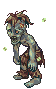
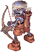
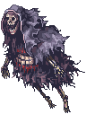
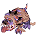
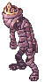
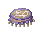
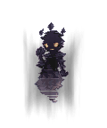
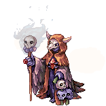

Morse's Cave

|
| Spanish |
| This quest or instance is repeatable. | ||
|---|---|---|
| Cooldown | Tickets Available | |
|
Resets at 0:00 |
Solo: No Limit | Party: No Limit |
Overview
| Requirements | |
|---|---|
| Base Level: | 160 |
| Starting Point: | |
| Party: | 1 or more players |
| Prerequisite(s): | Bios Island |
| Rewards | |
| Experience: | - |
| Items: | 1 Token of Hero and 2 Prize of Hero |
Morse Cave is part of the episode 14.3 and is the sequel instance to Bios Island. Through Reaper Yanku scheming, Satan Morroc will soon return stronger than ever! It is up to you and your friends to stop him before it is too late!!
You will be able to access this instance if you've completed Bios Island. It is recommended to bring minimal support classes and the maximum number of damage dealer as it will reduce the chances of having no damage dealer during the split in phase 3.
In the event where you end up in an uneven split where one group does not have any damage dealers, you are able to reshuffle the group by having a damage dealer exit the instance using Butterfly Wing and re-entering the instance. He will be randomly placed in one of the two groups. Repeat this process until the damage dealer joins the right group. Speak to Red Flower to re-enter.
You can re-enter the instance if you die but you only have 1 hour to complete this instance.
Walkthrough
To enter this instance, warp to Bios Island under instance tab.
Talk to Senior Tracker to generate the instance.

Talk to the Red Flower to enter.

The instance is divided into 5 phases.
- You fight 9 Morroc's Ghoul, kill them all to proceed.
- Weakened Morroc will spawn. Kill him and move on.
- Your party will be randomly split into 2 groups and be rooted in place. If the split is bad, you can have members re-enter the dungeon and get warped randomly again. Both parties must be alive and have killed all the mobs otherwise the instance will end.
- All party members will be teleported back into the same ice room and you'll get new waves of monsters to kill.
- Your party will face Morroc Necromancer (ghost form). It is fairly weak and easy to kill.
- Once killed, he will morph into his FINAL FORM (necromancer form).
The MVP itself isn't too hard to deal with, he only spams Frost Joke and Meteor Storm. The hard part is the amount of slaves spawned every 20 seconds which can easily overcome your party if you're not careful. It is recommended to group your party alongside the walls and stick together for this phase.
- Morroc Necromancer will drop 2 Prize of Hero upon death.
- Talk to the teleportation device to exit the map and speak to Senior Tracker in order to receive your Token of Hero.
Monsters
| Image | Name | HP | Race | Element |
|---|---|---|---|---|
|  | Morroc Ghoul | 295,240 | Demon | Neutral 3 |
|  | Morroc's Archer Skeleton | 295,240 | Demon | Neutral 3 |
|  | Morroc's Wraith | 100,000 | Demon | Neutral 3 |
|  | Morroc's Verit | 442,860 | Demon | Neutral 3 |
|  | Morroc's Osiris | 442,860 | Demon | Neutral 3 |
|  | Morroc's Plankton | 295,240 | Demon | Neutral 3 |
|  | Morroc Necromancer(First Form) | 4,000,000 | Human | Neutral 3 |
|  | Morroc Necromancer(Final Form)
|
80,000,000 | Human | Earth 4 |
Cards
| Card | Type | Effects |
|---|---|---|
 Morocc's Minion Card Morocc's Minion Card
|
Armor Card |
|